The Moroccan information broker, Cypher is a one-man surveillance network who keeps tabs on the enemy's
every move. No secret is safe. No maneuver goes unseen. Cypher is always watching.
INSTANTLY toss the cyber cage in front of Cypher. Activate to create a zone that blocks vision and slows enemies who pass through it.
CYPHER CAGE
EQUIP a spycam. FIRE to place the spycam at the targeted location. While in control of the camera, FIRE to shoot a marking dart. This dart will Reveal the location of any player struck by the dart. This ability can be picked up to be REDEPLOYED.
SPYCAM

EQUIP a trapwire. FIRE to place a destructible and covert tripwire at the targeted location creating a line that spans between the placed location and the wall opposite. Enemy players who cross a tripwire will be tethered, revealed, and dazed.
TRIPWIRE
INSTANTLY use on a dead enemy player in your crosshairs to reveal the location of all living enemy players